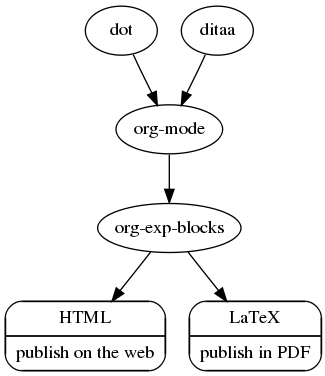
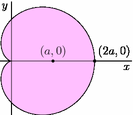

org-exp-blocks.el — pre-process blocks when exporting org files
Table of Contents
General
org-exp-blocks can be used to pre-process blocks when exporting org
files. An extensible framework for block exportation is provided, as
well as block exporters for ditaa, dot, comments.
Note: the ability to evaluate R blocks with org-exp-blocks has been removed. Please use org-babel for this purpose.
How to use it
Quick Examples
To use org-exp-blocks first load it as described below. Then try
one of the following.
ditaa
ditaa is a tool for converting ASCII images into actual images. I
believe ditaa is distributed with newer versions of org-mode. To make
sure that you have ditaa installed check the value of
`org-ditaa-jar-path’, it should point to a ditaa.jar file. Once
ditaa is installed and the `org-ditaa-jar-path’ variable is set
appropriately copy the following block in an org-mode file
#+begin_ditaa blue.png -r -S +---------+ | cBLU | | | | +----+ | |cPNK| | | | +----+----+ #+end_ditaa
Then export that file to HTML or LaTeX. You should see an image like the following appear in the exported file.
dot
dot is a language for representing structural information as diagrams
of abstract graphs and networks. It is part of Graphviz. To try out
org-exp-blocks dot export install the dot shell command on your
system, copy the following into an org-mode file
#+begin_dot dot.png -Tpng
digraph data_relationships {
"org-mode"
"org-exp-blocks"
"dot"
"ditaa"
"HTML" [shape=Mrecord, label="{HTML|publish on the web\l}"]
"LaTeX" [shape=Mrecord, label="{LaTeX|publish in PDF\l}"]
"org-mode" -> "org-exp-blocks"
"dot" -> "org-mode"
"ditaa" -> "org-mode"
"org-exp-blocks" -> "HTML"
"org-exp-blocks" -> LaTeX
}
#+end_dot
Then export that file to HTML or LaTeX. You should see an image like the following appear in the exported file.

Loading it (No surprises here)
The easiest way is by
M-x customize-apropos org-modules
Check the line for exp-blocks. This will cause it to be loaded every time you start org-mode.
You’ll still have to load it manually the first time.
Of course, you can also just try it out by loading it manually.
If you prefer to manually customize your emacs then make sure that the
path to org’s contrib directory is in your load-path and add the
following to your .emacs.
(require 'org-exp-blocks)
Adding new source-code types
org-exp-blocks is extensible. If you would like to add a new block
type code to org-exp-blocks you may do so by defining an export
function for that block which will be called by
`org-export-blocks-preprocess’. Then add the block name, and the name
of the function to the `org-export-blocks’ variable.
If you add a new block type, and get it working please share your changes with the mailing list or post them here.
Credits
org-exp-blocks was developed by Eric Schulte with much-appreciated
help from Carsten Dominik.
Additional Block Types
Asymptote
Asymptote is a “powerful descriptive vector graphics language for technical drawing”. For more information see http://asymptote.sourceforge.net/.
Installation
The following can be used to add asymptote support to
org-exp-blocks.
(setq org-export-blocks (cons '(asy org-export-blocks-format-asy) org-export-blocks)) (defun org-export-blocks-format-asy (body &rest headers) "Pass block BODY to the asy utility creating an image. Specify the path at which the image should be saved as the first element of headers, any additional elements of headers will be passed to the asy utility as command line arguments. The default output format is pdf, but you can specify any format supported by Imagemagick convert program with '-f outformat'." (message "asy-formatting...") (let* ((out-file (if headers (car headers))) (format (or (and (string-match ".+\\.\\(.+\\)" out-file) (match-string 1 out-file)) "pdf")) (args (if (cdr headers) (mapconcat 'identity (cdr headers) " "))) (data-file (make-temp-file "org-asy"))) (setq body (if (string-match "^\\([^:\\|:[^ ]\\)" body) body (mapconcat (lambda (x) (substring x (if (> (length x) 1) 2 1))) (org-split-string body "\n") "\n"))) (cond ((or htmlp latexp) (with-temp-file data-file (insert body)) (message (concat "asy -globalwrite -f " format " -o " out-file " " args " " data-file)) (shell-command (concat "asy -globalwrite -f " format " -o " out-file " " args " " data-file)) (format "\n[[file:%s]]\n" out-file)) (t (concat "\n#+BEGIN_EXAMPLE\n" body (if (string-match "\n$" body) "" "\n") "#+END_EXAMPLE\n")))))
Example
Here is a simple asymptote block :
#+begin_asy out.png
import graph;
size(0,4cm);
real f(real t) {return 1+cos(t);}
path g=polargraph(f,0,2pi,operator ..)--cycle;
filldraw(g,pink);
xaxis("$x$",above=true);
yaxis("$y$",above=true);
dot("$(a,0)$",(1,0),N);
dot("$(2a,0)$",(2,0),N+E);
#+end_asy
The output should be 
Credit
Thanks to Nicolas Goaziou for adding support for asymptote.
Dot with EPS
While dot is capable of generating pdf images directly the results are
more pleasing when dot is used to generate an eps file and
epstopdf is used to generate the actual pdf.
The following block type takes the name of a file, and generates both and EPS and a PDF file at that base name.
Installation
The following can be used to add dot-and-eps block support to
org-exp-blocks.
(defun org-export-blocks-format-dot-and-eps (body &rest headers) "Pass block BODY to the dot graphing utility creating an eps file which is then processed by eps to create a pdf. Specify the path at which the final pdf image should be created as the first element of headers, any additional elements of headers will be passed to the dot utility as command line arguments. #+begin_dot_and_eps duh digraph test { a -> { b c d e }; e -> { f g h i }; }; #+end_dot" (message "dot-and-eps-formatting...") (let ((out-file (if headers (car headers))) (args (if (cdr headers) (mapconcat 'identity (cdr headers) " "))) (data-file (make-temp-file "org-dot"))) (cond ((or htmlp latexp docbookp) (with-temp-file data-file (insert body)) (shell-command (message (concat "dot -Teps " data-file " " args " -o " out-file ".eps"))) (shell-command (message (concat "epstopdf " out-file ".eps"))) (format "\n[[file:%s.pdf]]\n" out-file)) (t (concat "\n#+BEGIN_EXAMPLE\n" body (if (string-match "\n$" body) "" "\n") "#+END_EXAMPLE\n"))))) (org-export-blocks-add-block '(dot-and-eps org-export-blocks-format-dot-and-eps nil))
Example
Here is an example dot-and-eps block
#+begin_dot-and-eps out-w-eps
digraph test {
a -> { b c d e };
e -> { f g h i };
};
#+end_dot-and-eps
Credit
Thanks to Russell Adams for noticing this need, and supplying the command lines.